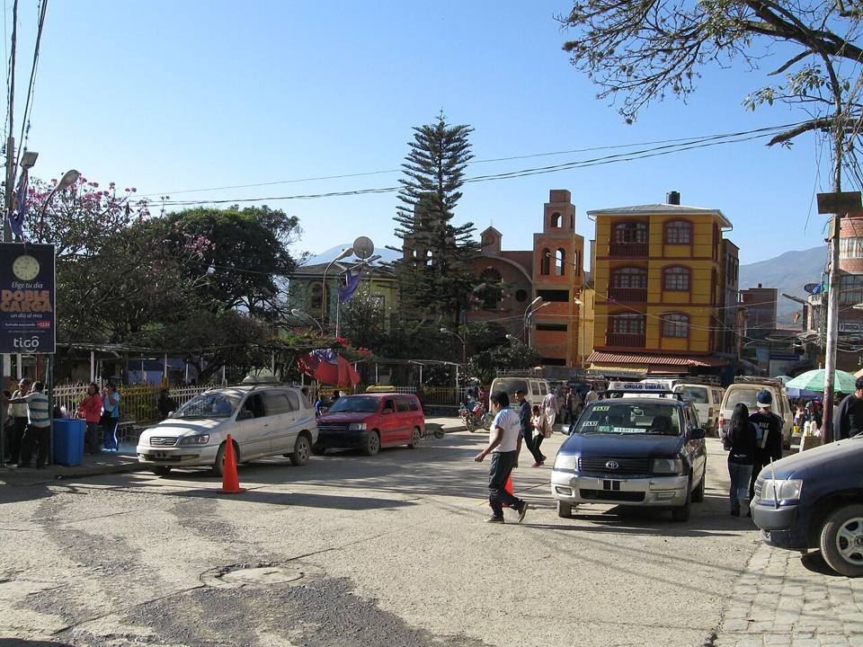
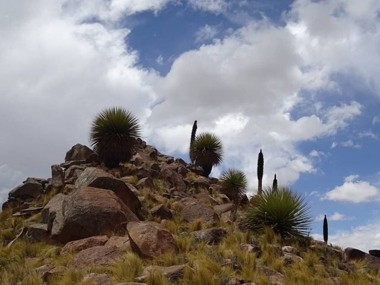

Chulumani (South Yungas)
La Paz Department · Nature and hiking

Chulumani is the small capital of the South Yungas, clinging to a mountain covered in coffee, coca and citrus. Calmer and less touristy than Coroico, it has a mild climate, lovely walks and the Apa Apa reserve, one of the last preserved cloud forests in the region. It's also a place to discover the Afro-Bolivian culture of the Yungas.
1,700 maltitude
1 to 2 daysto spend there
Things to do
- Apa Apa reserve and cloud forest
- Coffee and citrus plantations
- Walks and viewpoints over the valleys
- Afro-Bolivian culture and saya music
What to eat
- Yungas coffeeLocally grown coffee, to drink in Coroico's little cafés or to take home.
- Tropical fruitMangoes, pineapples, papayas, achachairú (a small tangy fruit) and fresh juices everywhere for a few bolivianos.
- FricaséA spicy pork soup with yellow chilli and mote, said to cure hangovers.
Tip. Minibus from La Paz (Villa Fátima), about 4 h. Mild climate all year.
How to get to Chulumani
Yunga Cruz Road (bus, car) · about 1 h
From the end of the trek, transport to Chulumani.
Takesi trek Road (bus, car) · about 2 h
From Yanacachi, end of the trek, minibus to Chulumani.
La Paz Road (bus, car) · about 4 h
Minibus from Villa Fátima, in La Paz.
Photos of Chulumani (South Yungas)


More places in this region
 La PazThe world's highest seat of government, in a bowl at the foot of Illimani.
La PazThe world's highest seat of government, in a bowl at the foot of Illimani. El AltoThe big Aymara city on the Altiplano, right above La Paz: a giant market, cholets and cholita wrestling.
El AltoThe big Aymara city on the Altiplano, right above La Paz: a giant market, cholets and cholita wrestling. Valle de la LunaMoon-like clay formations in the southern suburbs of La Paz.
Valle de la LunaMoon-like clay formations in the southern suburbs of La Paz. Valle de las ÁnimasA forest of earth spires on the edge of La Paz, bigger and wilder than the Valley of the Moon.
Valle de las ÁnimasA forest of earth spires on the edge of La Paz, bigger and wilder than the Valley of the Moon. ChacaltayaA former ski area at 5,400 m: the highest view of the Cordillera Real.
ChacaltayaA former ski area at 5,400 m: the highest view of the Cordillera Real. Huayna PotosíA 6,000 m peak known as one of the most accessible, with a guided 2 or 3-day climb.
Huayna PotosíA 6,000 m peak known as one of the most accessible, with a guided 2 or 3-day climb. Cordillera Real: CondoririGlacial lagoons and snowy peaks, two hours from La Paz.
Cordillera Real: CondoririGlacial lagoons and snowy peaks, two hours from La Paz. TiwanakuUNESCO-listed pre-Inca site: the Gate of the Sun and the Kalasasaya temple.
TiwanakuUNESCO-listed pre-Inca site: the Gate of the Sun and the Kalasasaya temple.- Uru community of IruitoAn Uru community on the Desaguadero river, keepers of a very old lake culture.
 Jesús de MachacaAn Aymara Altiplano village and its 1706 church, south of Lake Titicaca.
Jesús de MachacaAn Aymara Altiplano village and its 1706 church, south of Lake Titicaca.
Comanche and its Puya raimondiiA forest of Puya raimondii, the world's largest bromeliad, on the Altiplano.- Viscachani hot springsWarm-water baths on the Altiplano, on the road to Oruro, about 1 h 30 from La Paz.
 SorataA quiet village at the foot of Illampu, a base for treks.
SorataA quiet village at the foot of Illampu, a base for treks. Charazani and ApolobambaLand of the Kallawaya Andean healers (UNESCO), with hot springs and great treks.
Charazani and ApolobambaLand of the Kallawaya Andean healers (UNESCO), with hot springs and great treks. Death Road (bike)The world's most famous mountain bike descent: from 4,650 m to 1,200 m in a day.
Death Road (bike)The world's most famous mountain bike descent: from 4,650 m to 1,200 m in a day. Choro trek (Inca trail)Three days on a pre-Hispanic trail, from the snows of La Cumbre down to the Yungas forest.
Choro trek (Inca trail)Three days on a pre-Hispanic trail, from the snows of La Cumbre down to the Yungas forest. Takesi trek (Inca trail)Two days on one of Bolivia's best-preserved Inca trails, down to Yanacachi.
Takesi trek (Inca trail)Two days on one of Bolivia's best-preserved Inca trails, down to Yanacachi. Yunga Cruz trekThe wildest pre-Hispanic trail down to the Yungas: 4 to 5 days below Illimani.
Yunga Cruz trekThe wildest pre-Hispanic trail down to the Yungas: 4 to 5 days below Illimani. Coroico (Yungas)A hilltop village in the subtropical Yungas: coffee, waterfalls and pools with a view.
Coroico (Yungas)A hilltop village in the subtropical Yungas: coffee, waterfalls and pools with a view.